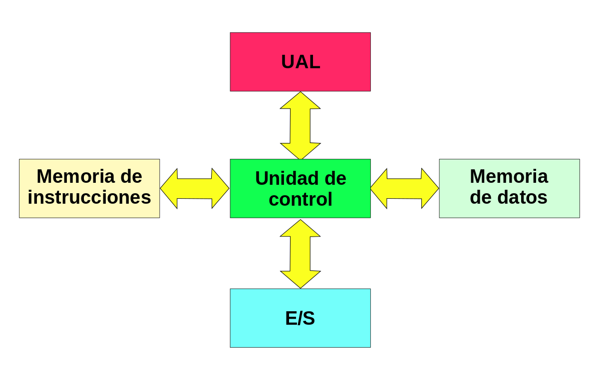
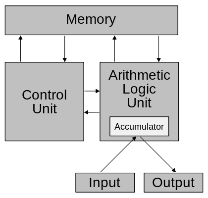

1.1 MODELOS DE ARQUITECTURA DE COMPUTO
1.1.1 ARQUITECTURA CLASICA
Estas arquitecturas se desarrollaron en las primeras computadoras electromecánicas y de tubos de vacío. Aun son usadas en procesadores empotrados de gama baja y son la base de la mayoría de las arquitecturas modernas.
Arquitectura Mauchly-Eckert (Von Newman)
_architecture.svg.png)
Esta arquitectura fue utilizada en la computadora ENIAC. Consiste en una unidad central de proceso que se comunica a través de un solo bus con un banco de memoria en donde se almacenan tanto los códigos de instrucción del programa, como los datos que serán procesados por este. Esta arquitectura es la más empleada en la actualidad ya, que es muy versátil. Ejemplo de esta versatilidad es el funcionamiento de los compiladores, los cuales son programas que toman como entrada un archivo de texto conteniendo código fuente y generan como datos de salida, el código máquina que corresponde a dicho código fuente (Son programas que crean o modifican otros programas). Estos datos de salida pueden ejecutarse como un programa posteriormente ya que se usa la misma memoria para datos y para el código del programa.
La principal desventaja de esta arquitectura, es que el bus de datos y direcciones único se convierte en un cuello de botella por el cual debe pasar toda la información que se lee de o se escribe a la memoria, obligando a que todos los accesos a esta sean secuenciales. Esto limita el grado de paralelismo (acciones que se pueden realizar al mismo tiempo) y por lo tanto, el desempeño de la computadora. Este efecto se conoce como el cuello de botella de Von Newman.
En esta arquitectura apareció por primera vez el concepto de programa almacenado. Anteriormente la secuencia de las operaciones era dictada por el alambrado de la unidad de control, y cambiarla implicaba un proceso de recableado laborioso, lento (hasta tres semanas) y propenso a errores. En esta arquitectura se asigna un código numérico a cada instrucción. Dichos códigos se almacenan en la misma unidad de memoria que los datos que van a procesarse, para ser ejecutados en el orden en que se encuentran almacenados en memoria. Esto permite cambiar rápidamente la aplicación de la computadora y dio origen a las computadoras de propósito general.
Mas a detalle, el procesador se subdivide en una unidad de control (C.U.), una unidad lógica aritmética (A.L.U.) y una serie de registros. Los registros sirven para almacenar internamente datos y estado del procesador. La unidad aritmética lógica proporciona la capacidad de realizar operaciones aritméticas y lógicas. La unidad de control genera las señales de control para leer el código de las instrucciones, decodificarlas y hacer que la ALU las ejecute.
Arquitectura Harvard
Esta arquitectura surgió en la universidad del mismo nombre, poco después de que la arquitectura Von Newman apareciera en la universidad de Princeton. Al igual que en la arquitectura Von Newman, el programa se almacena como un código numérico en la memoria, pero no en el mismo espacio de memoria ni en el mismo formato que los datos. Por ejemplo, se pueden almacenar las instrucciones en doce bits en la memoria de programa, mientras los datos de almacenan en ocho bits en una memoria aparte.
El hecho de tener un bus separado para el programa y otro para los datos permite que se lea el código de operación de una instrucción, al mismo tiempo se lee de la memoria de datos los operados de la instrucción previa. Así se evita el problema del cuello de botella de Von Newman y se obtiene un mejor desempeño.
En la actualidad la mayoría de los procesadores modernos se conectan al exterior de manera similar a a la arquitectura Von Newman, con un banco de memoria masivo único, pero internamente incluyen varios niveles de memoria cache con bancos separados en cache de programa y cache de datos, buscando un mejor desempeño sin perder la versatilidad.
1.1.2 ARQUITECTURAS SEGMENTADAS
Las arquitecturas segmentadas o con segmentación del cauce buscan mejorar el desempeño realizando paralelamente varias etapas del ciclo de instrucción al mismo tiempo. El procesador se divide en varias unidades funcionales independientes y se dividen entre ellas el procesamiento de las instrucciones. Para comprender mejor esto, supongamos que un procesador simple tiene un ciclo de instrucción sencillo consistente solamente en una etapa de búsqueda del código de instrucción y en otra etapa de ejecución de la instrucción. En un procesador sin segmentación del cauce, las dos etapas se realizarían de manera secuencial para cada una de las instrucciones, como lo muestra la siguiente figura.
En un procesador con segmentación del cauce, cada una de estas etapas se asigna a una unidad funcional diferente, la búsqueda a la unidad de búsqueda y la ejecución a la unidad de ejecución. Estas unidades pueden trabajar en forma paralela en instrucciones diferentes. Estas unidades se comunican por medio de una cola de instrucciones en la que la unidad de búsqueda coloca los códigos de instrucción que leyó para que la unidad de ejecución los tome de la cola y los ejecute. Esta cola se parece a un tubo donde las instrucciones entran por un extremo y salen por el otro. De esta analogía proviene el nombre en inglés: Pipelining o entubamiento.
Completando el ejemplo anterior, en un procesador con segmentación, la unidad de búsqueda comenzaría buscando el código de la primera instrucción en el primer ciclo de reloj. Durante el segundo ciclo de reloj, la unidad de búsqueda obtendría el código de la instrucción 2, mientras que la unidad de ejecución ejecuta la instrucción 1 y así sucesivamente. La siguiente figura muestra este proceso.
En este esquema sigue tomando el mismo número de ciclos de reloj (el mismo tiempo), pero como se trabaja en varias instrucciones al mismo tiempo, el número promedio de instrucciones por segundo se multiplica. La mejora en el rendimiento no es proporcional al número de segmentos en el cauce debido a que cada etapa no toma el mismo tiempo en realizarse, además de que se puede presentar competencia por el uso de algunos recursos como la memoria principal. Otra razón por la que las ventajas de este esquema se pierden es cuando se encuentra un salto en el programa y todas las instrucciones que ya se buscaron y se encuentran en la cola, deben descartarse y comenzar a buscar las instrucciones desde cero a partir de la dirección a la que se saltó. Esto reduce el desempeño del procesador y aún se investigan maneras de predecir los saltos para evitar este problema.
1.1.3 ARQUITECTURA DE MULTIPROCESAMIENTO

Las arquitecturas segmentadas o con segmentación del cauce buscan mejorar el desempeño realizando paralelamente varias etapas del ciclo de instrucción al mismo tiempo. El procesador se divide en varias unidades funcionales independientes y se dividen entre ellas el procesamiento de las instrucciones. Para comprender mejor esto, supongamos que un procesador simple tiene un ciclo de instrucción sencillo consistente solamente en una etapa de búsqueda del código de instrucción y en otra etapa de ejecución de la instrucción. En un procesador sin segmentación del cauce, las dos etapas se realizarían de manera secuencial para cada una de las instrucciones, como lo muestra la siguiente figura.
En un procesador con segmentación del cauce, cada una de estas etapas se asigna a una unidad funcional diferente, la búsqueda a la unidad de búsqueda y la ejecución a la unidad de ejecución. Estas unidades pueden trabajar en forma paralela en instrucciones diferentes. Estas unidades se comunican por medio de una cola de instrucciones en la que la unidad de búsqueda coloca los códigos de instrucción que leyó para que la unidad de ejecución los tome de la cola y los ejecute. Esta cola se parece a un tubo donde las instrucciones entran por un extremo y salen por el otro. De esta analogía proviene el nombre en inglés: Pipelining o entubamiento.
Completando el ejemplo anterior, en un procesador con segmentación, la unidad de búsqueda comenzaría buscando el código de la primera instrucción en el primer ciclo de reloj. Durante el segundo ciclo de reloj, la unidad de búsqueda obtendría el código de la instrucción 2, mientras que la unidad de ejecución ejecuta la instrucción 1 y así sucesivamente. La siguiente figura muestra este proceso.
En este esquema sigue tomando el mismo número de ciclos de reloj (el mismo tiempo), pero como se trabaja en varias instrucciones al mismo tiempo, el número promedio de instrucciones por segundo se multiplica. La mejora en el rendimiento no es proporcional al número de segmentos en el cauce debido a que cada etapa no toma el mismo tiempo en realizarse, además de que se puede presentar competencia por el uso de algunos recursos como la memoria principal. Otra razón por la que las ventajas de este esquema se pierden es cuando se encuentra un salto en el programa y todas las instrucciones que ya se buscaron y se encuentran en la cola, deben descartarse y comenzar a buscar las instrucciones desde cero a partir de la dirección a la que se saltó. Esto reduce el desempeño del procesador y aún se investigan maneras de predecir los saltos para evitar este problema.
1.2 ANALISIS DE LOS COMPONENTES
1.2.1 ARQUITECTURAS
Arquitecturas CISC
En la arquitectura computacional, CISC es un modelo de arquitectura, en donde los microprocesadores tienen un conjunto instrucciones que caracterizan por ser muy amplio y permitir operaciones complejas entre operandos, situados en la memoria o en los registros internos.
Este tipo de arquitectura dificulta el paralelismo entre instrucciones, por lo que, en la actualidad, la mayoría de los sistemas CISC de alto rendimiento implementan un sistema que convierte dichas instrucciones complejas en varias instrucciones simples del tipo RISC, llamadas generalmente microinstrucciones
Dato importante: Los CISC pertenecen a la primera corriente de construcción de procesadores, antes del desarrollo de los RISC. Ademas Para realizar una sola instrucción un chip CISC requiere de cuatro a diez ciclos de reloj.
p>Entre las ventajas de CISC destacan las siguientes:- Reduce la dificultad de crear compiladores.
- Permite reducir el costo total del sistema.
- Reduce los costos de creación de software.
- Mejora la compactación de código.
- Facilita la depuración de errores.
Arquitecturas RISC
Arquitectura computacional, RISC (Reduced Instruction Set Computer) es un tipo de microprocesador con las siguientes características fundamentales:
- Instrucciones de tamaño fijo y presentado en un reducido número de formatos.
- Sólo las instrucciones de carga y almacenamiento acceden a la memoria de datos.
- El objetivo de diseñar máquinas con esta arquitectura es posibilitar la segmentación y el paralelismo en la ejecución de instrucciones y reducir los accesos a memoria.
- Las máquinas RISC protagonizan la tendencia actual de construcción de microprocesadores.
1.2.1.1 CPU
Se la suele llamar coloquialmente como microprocesador o simplemente procesador, y puedes considerarla como el cerebro de cualquier dispositivo. Se encarga de procesar todas las instrucciones del dispositivo, leyendo las órdenes y requisitos del sistema operativo, así como las instrucciones de cada uno de los componentes y las aplicaciones.
CPU es la que se encarga de que todo funcione correctamente, y de interpretar todo lo que quiere hacer el sistema operativo o los componentes, estableciendo las conexiones y realizando todos los cálculos precisos para que funcione. Cuanto más potente sea el procesador, más rápido podrá hacer las operaciones y más rápido funcionará tu dispositivo en general.
Los CPUs modernos se pueden clasificar por sus características como:
- Tamaño de la Unidad Aritmética Lógica (ALU).
- Bus de conexión al exterior (8, 16, 32, 64 bits).
- Si su arquitectura tiene cauce (pipeline).
- Si son de arquitectura CISC o RISC.
- Si son Von Newmann o Harvard.
- Si manejan instrucciones enteras o implementan también instrucciones de punto flotante.
No hace mucho tiempo, el procesador era algo totalmente desconocido por los usuarios de PCs. Esto fue cambiando con el tiempo y en la actualidad cualquier persona al comprar un equipo se pregunta acerca de los atributos elementales de este dispositivo. Es que el procesador es una parte esencial de la computadora, por eso generalmente se la conoce como su “cerebro”.
1.2.1.2 ALU
Es un circuito logico digital que realiza operaciones aritmeticas y logicas entres los datos de un circuito: suma resta, division y multiplicacion, asi como establece comparaciones logicas a traves de los condicionales logicos "si", "no", y "o".
Todos los microprocesadores incluyen al menos una ALU, que varia su poder y complejidadsegún su finalidad Además, la ALU cuenta con una serie de registros para almacenar los datos y bits de informacion sobre los resultados.
Operaciones a realizar por la ALU:
- Suma aritmetica
- Resta aritmetica
- Operaciones lógicas
- Desplazamiento o rotación
- Transferencia
El circuito ALU es solo un operador, no puede tomar decisiones. Las entradas deben contener tanto la magnitud como el signo que corresponda a la operacion.
La ALU deberá contar con un circuito de control que le permita:
- Identificar la operación a realizar
- Administrar los recursos internos
- Generar las banderas
1.2.1.3 Registros
Los registros que encuentran dentro de cada procesador su función principales almacenar los valores de cada uno de los datos,comandos,instrucciones o estados binarios que son los que ordenan qué dato debe procesarse, así como la forma en la que se debe realizar.
Un registro no deja de ser una memoria de velocidad alta y con poca capacidad. Cada registro puede contener una instrucción, una dirección de almacenamiento o cualquier tipo de dato.
Cada procesador tiene varias asignaciones o tareas que debe de realizar para el manejo de la información. La información es recibida generalmente en código binario, procedente de las aplicaciones para, después, procesarlos de una forma determinada.
Tipos de registros
registros del procesador se dividen o clasifican atendiendo al propósito que sirven o a las instrucciones que les ordenan.
- Registros de datos: Guardan valores de datos numéricos, como son los caracteres o pequeñas órdenes. Los procesadores antiguos tenían un registro especial de datos: el acumulador, el cual era usado para operaciones determinadas.
- Registros de datos de memoria (MDR): Es un registro que se encuentra en el procesador y que está conectado al bus de datos. Tiene poca capacidad y una velocidad alta por la que escribe o lee los datos del bus que van dirigidos a la memoria o al puerto E/S, es decir, un periférico.
- Registros de direcciones: Guardan direcciones que son usadas para acceder a la memoria principal o primaria, que solemos conocer como ROM o RAM. En este sentido, podemos ver procesadores con registros que se usan solo para guardar direcciones o valores numéricos.
- Registros de propósito general (GPRs): Son registros que sirven para almacenar direcciones o datos generales. Se trata de una especie de registros mixtos que, como su propio indica, no tienen una función específica.
- Registros de propósito específico (SPRs): En esta ocasión, estamos ante registros que guardan datos del estado del sistema, como puede ser el registro de estado o el instruction pointer.
- Registros de estado: Sirven para guardar valores reales cuya función es determinar cuándo una instrucción debe ejecutarse o no.
- Registros constantes: Su cometido es guardar valores de sólo lectura como son el 0, 1 ó π.
1.2.1.4 Buses
Un bus se puede definir como una línea de interconexión portadora de información, constituida por varios hilos conductores (en sentido físico) o varios canales (en sentido de la lógica), por cada una de las cuales se transporta un bit de información.
Existen dos tipos primordiales de buses (conexiones) para el envío de la información:
- Bus paralelo: Es un bus en el cual los datos son enviados por bytes al mismo tiempo, con la ayuda de
varias líneas que tienen funciones fijas. La cantidad de datos enviada es bastante grande con una
frecuencia moderada y es igual al ancho de los datos por la frecuencia de funcionamiento. En los
computadores ha sido usado de manera intensiva, desde el bus del procesador, los buses de discos
duros, tarjetas de expansión y de vídeo hasta las impresoras.
Bus serie: En este los datos son enviados, bit a bit y se reconstruyen por medio de registros o rutinas de software. Está formado por pocos conductores y su ancho de banda depende de la frecuencia. Es usado desde hace menos de 10 años en buses para discos duros, tarjetas de expansión y para el bus del procesador.
Buses del procesador:
- Bus de direcciones: Es unidireccional debido a que la información fluye es una solo sentido, del CPU a la memoria ó a los elementos de entrada y salida. El CPU puede colocar niveles lógicos en las n líneas de dirección, con la cual se genera 2n posibles direcciones diferentes. Cada una de estas direcciones corresponde a una localidad de la memoria ó dispositivo de E / S. El procesador envía un código de dirección a la memoria o a otro dispositivo externo. El tamaño o anchura del bus de direcciones está especificado por el número de hilos conductores o pines.
- Bus de datos: Es bidireccional, pues los datos pueden fluir hacia ó desde el CPU.Las terminales pueden ser entradas ó salidas, según la operación que se este realizando ( lectura ó escritura ).En todos los casos, las palabras de datos transmitidas tiene m bits de longitud debido a que el CPU maneja palabras de datos de m bits; del número de bits del bus de datos, depende la clasificación del procesador.En algunos procesadores, el bus de datos se usa para transmitir otra información además de los datos.Es compartido en el tiempo ó multiplexado. Transfieren datos o códigos de instrucción hacia el procesador o se envían hacia el exterior los resultados de las operaciones o cálculos.
- Bus de control: Este conjunto de señales se usa para sincronizar las actividades y transacciones con los periféricos del sistema. Algunas de estas señales, como Lectura o Escritura R / W , son señales que el CPU envía para indicar que tipo de operación se espera en ese momento.
1.2.2 MEMORIA
Una memoria es un dispositivo que puede mantenerse en por lo menos dos estados estables por un cierto periodo de tiempo. Cada uno de estos estados estables puede utilizarse para representar un bit. A un dispositivo con la capacidad de almacenar por lo menos un bit se le conoce como celda básica de. Memoria Un dispositivo de memoria completo se forma con varias celdas básicas y los circuitos asociados para poder leer y escribir dichas celdas básicas, agrupadas como localidades de memoria que permitan almacenar un grupo de N bits. El número de bits que puede almacenar cada localidad de memoria es conocido como el ancho de palabra de la memoria. Coincide con el ancho del bus de datos. Uno de los circuitos auxiliares que integran la memoria es el decodificador de direcciones. Su función es la de activar a las celdas básicas que van a ser leídas o escritas a partir de la dirección presente en el bus de direcciones. Tiene como entradas las n líneas del bus de direcciones y 2N líneas de habilitación de localidad, cada una correspondiente a una combinación binaria distinta de los bits de direcciones. Por lo tanto, el número de localidades de memoria disponibles en un dispositivo (T) se relaciona con el número de líneas de dirección N por T= 2N.
1.2.2.1 CONCEPTOS BASICOS DE MANEJO DE LA MEMORIA
Se produce bajo el control directo y continuo del programa que solicita la operación de E/S. tanto en la entrada y salida programada como con interrupciones, el procesador es responsable de extraer los datos de la memoria en una salida, y almacenar los datos en la memoria principal. El problema con la E/S es que el procesador tiene que esperar un tiempo considerable hasta que el modulo en cuestión esté preparado para recibir o transmitir datos
1.2.2.2 MEMORIA PRINCIPAL
La memoria de semiconductor usa circuitos integrados basados en semiconductores para almacenar información. Un chip de memoria de semiconductor puede contener millones de minúsculos transistores o condensadores. Existen memorias de semiconductor de ambos tipos: volátiles y no volátiles. En las computadoras modernas, la memoria principal consiste casi exclusivamente en memoria de semiconductor volátil y dinámica, también conocida como memoria dinámica de acceso aleatorio o más comúnmente RAM, su acrónimo inglés. Con el cambio de siglo, ha habido un crecimiento constante en el uso de un nuevo tipo de memoria de semiconductor no volátil llamado memoria flash. Dicho crecimiento se ha dado, principalmente en el campo de las memorias fuera de línea en computadoras domésticas. Las memorias de semiconductor no volátiles se están usando también como memorias secundarias en varios dispositivos de electrónica avanzada y computadoras especializadas y no especializadas.
1.2.2.3 MEMORIA DE CACHÉ
En informática, la caché es la memoria de acceso rápido de una computadora, que guarda temporalmente las últimas informaciones procesadas.
La memoria caché es un búfer especial de memoria que poseen las computadoras, que funciona de manera similar a la memoria principal, pero es de menor tamaño y de acceso más rápido. Es usada por el microprocesador para reducir el tiempo de acceso a datos ubicados en la memoria principal que se utilizan con más frecuencia.
La caché es una memoria que se sitúa entre la unidad central de procesamiento (CPU) y la memoria de acceso aleatorio (RAM) para acelerar el intercambio de datos.
Cuando se accede por primera vez a un dato, se hace una copia en la caché; los accesos siguientes se realizan a dicha copia, haciendo que sea menor el tiempo de acceso medio al dato. Cuando el microprocesador necesita leer o escribir en una ubicación en memoria principal, primero verifica si una copia de los datos está en la caché; si es así, el microprocesador de inmediato lee o escribe en la memoria caché, que es mucho más rápido que de la lectura o la escritura a la memoria principal.
1.2.3 MANEJO DE LA ENTRADA/SALIDA
1.2.3.1 MÓDULOS DE ENTRADA/SALIDA
Los módulos de entrada y salida están conectados con el procesador y la memoria principal, y cada uno controla uno o más dispositivos externos. La arquitectura de E/S es su interfaz con el exterior, esta arquitectura se diseña de manera que permita una forma sistemática de controlar las interacciones con el mundo exterior y proporcione al sistema operativo la información que necesita para gestionar la actividad de E/S. Hay tres técnicas de E/S principales
1.2.3.2 ENTRADA/SALIDA PROGRAMDA
Se produce bajo el control directo y continuo del programa que solicita la operación de E/S. tanto en la entrada y salida programada como con interrupciones, el procesador es responsable de extraer los datos de la memoria en una salida, y almacenar los datos en la memoria principal. El problema con la E/S es que el procesador tiene que esperar un tiempo considerable hasta que el modulo en cuestión esté preparado para recibir o transmitir datos
1.2.3.3 ENTRADA/SALIDA MEDIANTE INTERRUPTORES
El programa genera una orden de E/S y después continúa ejecutándose hasta que el hardware lo interrumpe para indicar que la operación ha concluido. La entrada y salida con interrupciones, aunque es más eficiente que la sencilla, también requiere la intervención activa del procesador para transferir los datos entre la memoria y el módulo de E/S.
1.2.3.4 ACCESO DIRECTO A MEMORIA
Un procesador de E/S específico toma el control de la operación para transferir un bloque de datos. El módulo DMA(Acceso Directo a Memoria) es capaz de imitar al procesador y, de hecho, es capaz de transferir datos desde memoria a través del bus del sistema. El módulo DMA debe utilizar el bus solo cuando el procesador no lo necesita, o debe forzar al procesador a que suspenda temporalmente su funcionamiento. Un módulo de E/S no es únicamente un conector mecánico que permite enchufar el dispositivo al bus del sistema, sino que además, está dotado de inteligencia, es decir, contiene la lógica necesaria para permitir la comunicación entre el periférico y el bus.
1.2.3.5 CANALES Y PROCESADORES DE ENTRADA/SALIDA
El canal de entrada y salida representa una ampliación del concepto de DMA. Un canal de entrada y salida puede ejecutar instrucciones de entrada y salida, lo que le confiere un control completo sobre las operaciones de entrada y salida. Un canal selector controla varios dispositivos de velocidad elevada y en un instante dado, se dedica a transferir datos a uno de esos dispositivos, es decir el canal de entrada y salida selecciona un dispositivo y efectúa la transferencia de datos. Cada dispositivo o pequeño grupo de dispositivos es manejado por un controlador o módulo de E/S, así el canal de entrada y salida se utiliza en lugar de la CPU para controlar estos controladores de E/S. Un canal multiplexor puede manejar la entrada y salida de varios dispositivos al mismo tiempo. Para dispositivos de velocidad reducida, un multiplexor de byte acepta o transmite caracteres tan rápido como es posible a varios dispositivos.
1.2.4 BUSES
Los buses en las computadoras son circuitos que se encargan de la transferencia de datos, información y señales entre los diferentes componentes del sistema, como la memoria RAM, el procesador, las tarjetas de expansión y otros dispositivos periféricos.
El bus principal en una computadora es el bus del sistema, que conecta el procesador con la memoria y otros componentes clave del sistema. El bus del sistema puede dividirse en sub-buses que se encargan de transferir datos entre componentes específicos, como el bus de datos y el bus de direcciones.
Los buses también pueden ser clasificados por su velocidad, ancho de banda y su capacidad para manejar datos en paralelo o serie. La velocidad del bus es medida en MHz o GHz y determina la cantidad de datos que pueden ser transferidos por segundo. El ancho de banda se refiere a la cantidad de datos que pueden ser transferidos simultáneamente.
1.2.4.1 TIPOS DE BUSES
- SERIE y PARALELO: los primeros transmiten bit a bit y los segundos varios bits a la vez.
- MULTIPLEXADOS y NO MULTIPLEXADOS o DEDICADOS: los multiplexados realizan diferentes funciones en función de las necesidades del momento.
- CENTRALIZADOS y DISTRIBUIDOS: necesidad de determinar qué elemento transmite y cuál recibe. Generalmente existe administración centralizada por la CPU o procesador.
- SÍNCRONOS y ASÍNCRONOS (temporización): cómo ocurren los diferentes eventos (comienzo, fin,...) implicados en la transmisión de información. Utilización de una señal de reloj (comunicación síncrona) o unas líneas de protocolo (comunicación asíncrona).
1.2.4.2 ESTRCTURA DE BUSES
Los buses se componen de líneas eléctricas que transmiten un “0” (cero voltios) o un “1” (más de cero voltios).
Estructura de los Buses
- Líneas/bus de datos: camino para transferir datos entre el resto de componentes de un computador.
- Líneas/bus de direcciones: designan la posición/dirección de los datos. Son salidas de la CPU/procesador y determinan capacidad de direccionamiento.
- Líneas/bus de control: controlan el acceso y uso de las líneas/buses anteriores.
1.2.4.3 JERARQUIA DE BUSES
Compatibilidad entre buses:
Sólo si son eléctricamente idénticos. Las características de los diferentes tipos de buses deben estar normalizadas. Ejemplo: bus PCI, AGP, USB, FireWire...
Jerarquías de Buses
Antiguamente sólo existía un bus principal que lo conectaba todo: bus del sistema. Actualmente existe un conjunto de buses conectados entre sí y formando una jerarquía.Facilita la mejora del rendimiento de todo el computador al agrupar dentro de los diferentes tipos de buses aquellos componentes del ordenador que tienen aproximadamente la misma velocidad de transmisión de la información.Mientras más lejos del CPU, buses más lentos y normalmente de menos líneas de datos.
Varios tipos de buses en función de su posición dentro de la jerarquía:
- Bus de CPU o “bus local” del procesador: elementos más rápidos tales como la memoria caché.
- Bus local ó bus del Sistema (Front Side Bus): conecta elementos tales como la memoria principal o dispositivos rápidos (por ejemplo AGP).
- Bus de expansión y/o E/S: PCI, USB, ATA, SCSI,...
1.2.5 INTERRUPCIONES
Una interrupción consiste en un mecanismo que le permite al hardware la invocación de una rutina fuera del control del programa que está siendo ejecutado. Es una señal recibida por el procesador de una computadora, que indica que debe «interrumpir» el curso de ejecución actual y pasar a ejecutar código específico para tratar esta situación.
Una interrupción es una suspensión temporal de la ejecución de un proceso, para pasar a ejecutar una subrutina de servicio de interrupción, la cual, por lo general, no forma parte del programa, sino que pertenece al sistema operativo o al BIOS. Una vez finalizada dicha subrutina, se reanuda la ejecución del programa.
Las interrupciones son generadas por los dispositivos periféricos habilitando una señal del CPU (llamada IRQ del inglés "interrupt request") para solicitar atención del mismo. Por ejemplo. cuando un disco duro completa una lectura solicita atención al igual que cada vez que se presiona una tecla o se mueve el ratón.
La primera técnica que se empleó para esto fue el polling, que consistía en que el propio procesador se encargara de sondear los dispositivos periféricos cada cierto tiempo para averiguar si tenía pendiente alguna comunicación para él. Este método presentaba el inconveniente de ser muy ineficiente, ya que el procesador consumía constantemente tiempo y recursos en realizar estas instrucciones de sondeo.